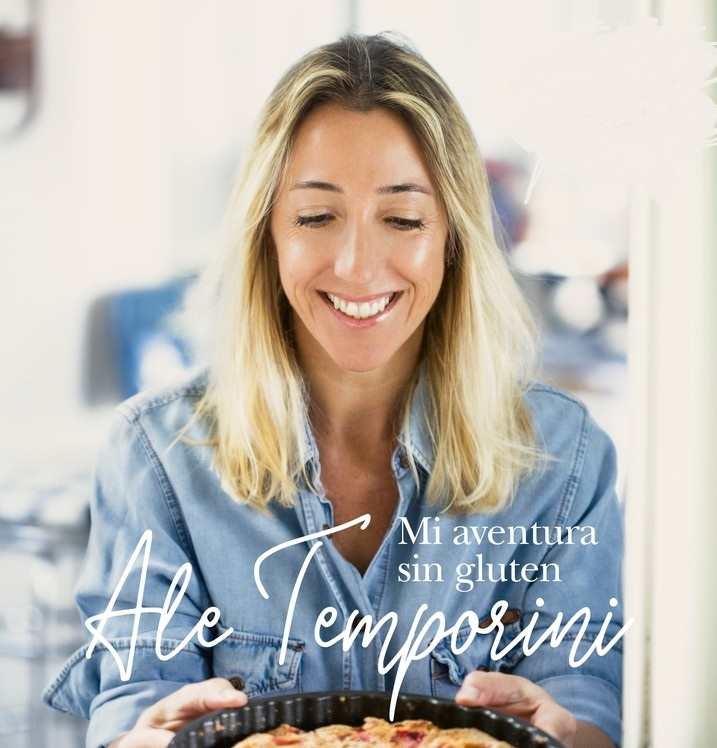

Aquí encontrarás una recopilación de destacados youtubers que comparten sus experiencias, recetas deliciosas y consejos para vivir sin gluten. Además, te presentamos las marcas más reconocidas que ofrecen productos aptos para celíacos, garantizando opciones deliciosas y seguras para tu dieta. ¡Explora y descubre un mundo lleno de sabores sin gluten!

Ale Temporini ofrece clases de cocina especializadas en recetas sin gluten, abarcando desde la preparación de panes y platos salados hasta la creación de deliciosos postres aptos para celíacos.
Soy Celíaco no Extraterrestre, con sede en Tucumán, se dedica a compartir recetas sin TACC que son simples, accesibles y económicas, facilitando opciones culinarias para personas con necesidades dietéticas específicas.